Data Dashboard & App
Board meetings, committee hearings, deadlines, and community events.
CB6 Full Board meetings, committee sessions, ULURP hearings, budget deadlines, school closures, and other civic events. Full Board meets the second Wednesday of each month at 6:30pm. Committee meetings are scheduled throughout the month. All meetings are open to the public.
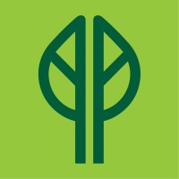
Prospect Park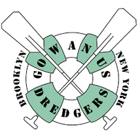
Gowanus Dredgers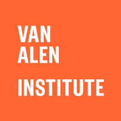
Van Alen Institute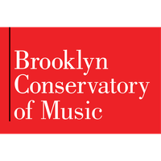
Brooklyn Conservatory of Music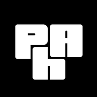
Powerhouse Arts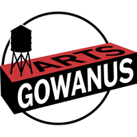
Arts Gowanus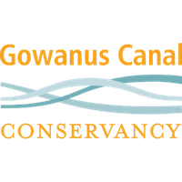
Gowanus Canal Conservancy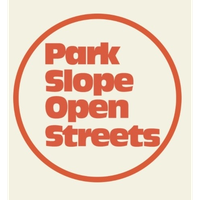
Park Slope Open Streets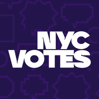
NYC Votes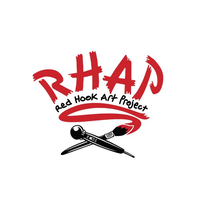
Red Hook Art Project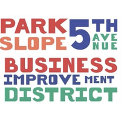
Park Slope 5th Ave BID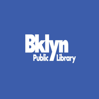
Brooklyn Public Library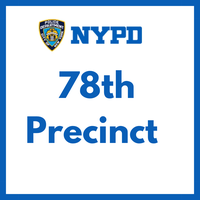
78th Precinct Community Council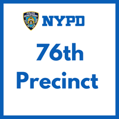
76th Precinct Community Council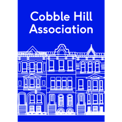
Cobble Hill Association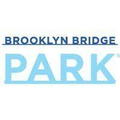
Brooklyn Bridge Park